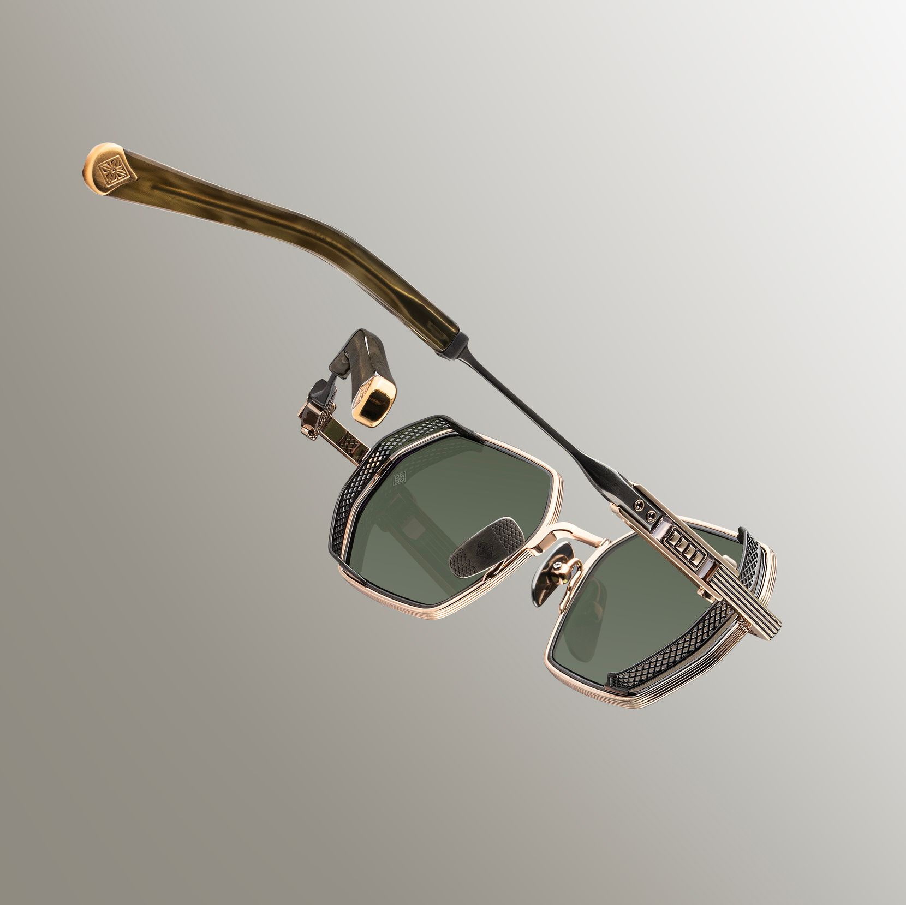
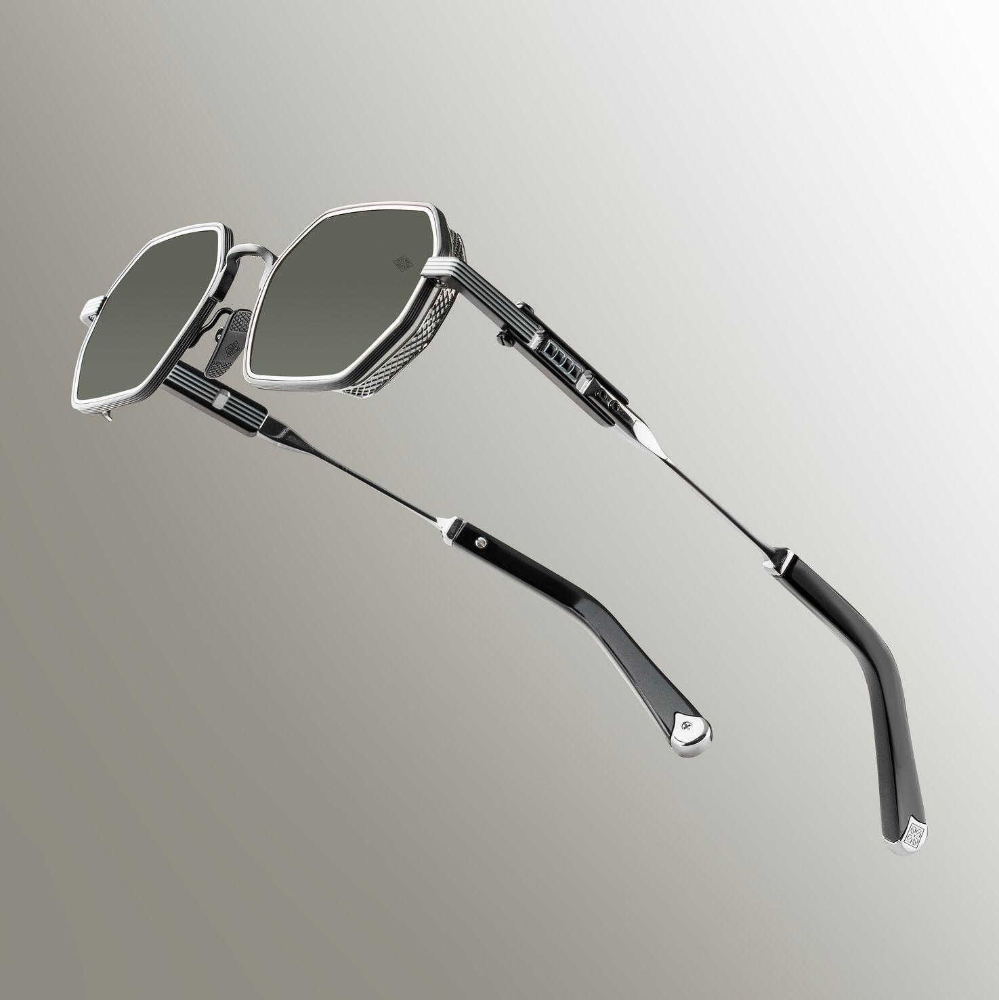
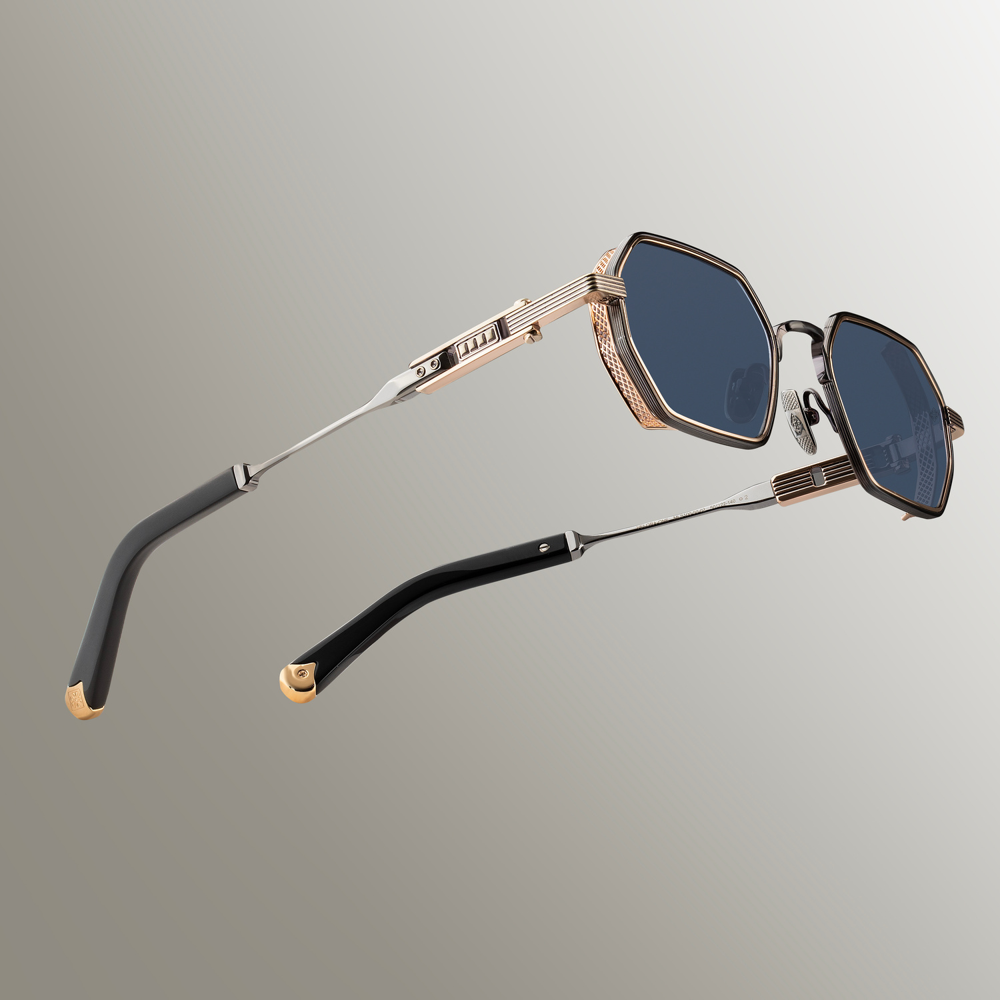

Ar-Ge & İnovasyon
Kusursuzluk tesadüf değildir; milimetrik bir hesaplamadır.
Laboratuvarın Kalbi
MinovaLAB, geleneksel gözlük üretiminin bittiği, optik mühendisliğinin başladığı noktadır. Burası, ham maddenin bir tasarım objesine dönüşmeden önce bilimle sınandığı Ar-Ge merkezimizdir.
Bizim için tasarım, eskiz defterinde değil; materyal testlerinde, yük analizlerinde ve yüz anatomisi simülasyonlarında başlar. Amacımız yalnızca estetik değil, yüzde yokmuş hissi yaratan gerçek bir konfor üretmektir.
Materyal Bilimi
İtalya
Minova çerçeveleri, dünyanın en prestijli asetat üreticisi olan Mazzucchelli'nin doğal hammaddelerinden üretilir.
| Yapı | Bitkisel bazlı, doğal asetat |
| Cilt Uyumu | Cilde dost ve hipoalerjenik |
| Renk | Uzun ömürlü renk stabilitesi |
| Palet | Doğadan ilham alan özel renkler |
Ham plakalar, ideal dayanıklılığa ulaşması için kontrollü ortamlarda aylarca dinlendirilir.


Gövde Çekirdeği
Çerçevenin iskeletinde, Japonya menşeli yüksek saflıkta titanyum alaşımı kullanılır.
| Ağırlık | Çelikten %40'tan daha hafif |
| Esneklik | Yüksek elastikiyet |
| Dayanıklılık | Korozyona karşı üstün direnç |
Bu yapı, Minova'nın "Zero-Gravity" konfor vaadinin temelidir.
Yüzey Teknolojisi
Titanyum yüzeyler, vakum ortamında uygulanan ion plating yöntemiyle kaplanır.
| Çizilme Direnci | Yüksek yüzey sertliği |
| Renk Kalıcılığı | Solmaya karşı dayanıklılık |
| Parlaklık | Uzun ömürlü metal parlaklığı |

Mekanik İnovasyon
Bir çerçevenin ömrünü menteşesi belirler.
Mikro kaplama sayesinde sessiz ve pürüzsüz açılıp kapanma.
Kendini sabitleyen sistem, uzun yıllar ilk günkü gerginliği korur.
Her menteşe, laboratuvarda 50.000 açma-kapama testinden geçirilir.
Üretim
Tüm çerçeveler, 5 eksenli CNC makinelerinde 0.01 mm toleransla işlenir. Bu sayede cam-çerçeve uyumu kusursuz hale gelir.
Teknoloji iskeleti kurar, ustalık karakter kazandırır. Her gövde, çok aşamalı parlatma işlemlerinden geçer ve son montajı deneyimli ustalar tarafından yapılır.